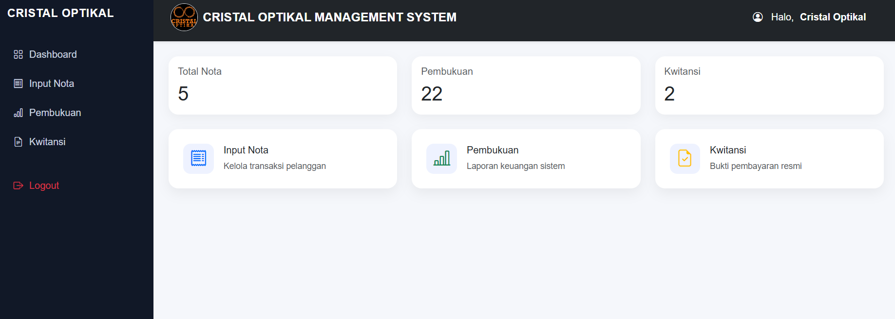
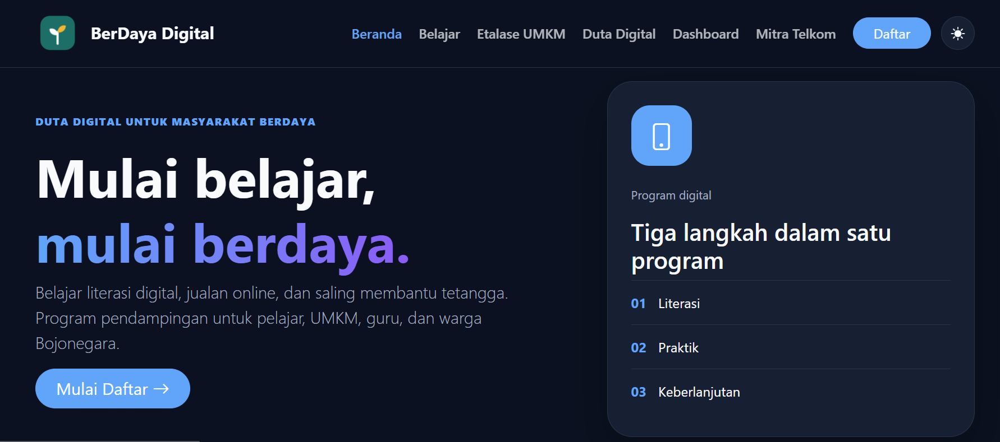
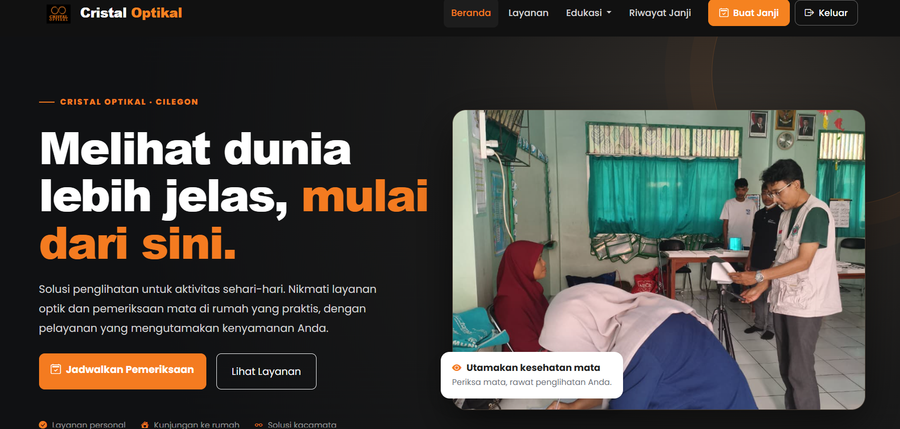

WebsiteMySQL
SMCristalOptikal
Sistem informasi pengelolaan Cristal Optikal untuk membantu pencatatan transaksi, nota, kwitansi, dan pembukuan.
Tanyakan ProyekKumpulan proyek website dan desain antarmuka sebagai bagian dari proses belajar dan pengembangan kemampuan saya.

Sistem informasi pengelolaan Cristal Optikal untuk membantu pencatatan transaksi, nota, kwitansi, dan pembukuan.
Tanyakan Proyek
Halaman beranda program literasi dan pemberdayaan digital untuk pelajar, UMKM, guru, dan masyarakat.
Tanyakan Proyek
Website informasi layanan Cristal Optikal, termasuk pemeriksaan mata, layanan optik, dan penjadwalan pemeriksaan.
Tanyakan Proyek